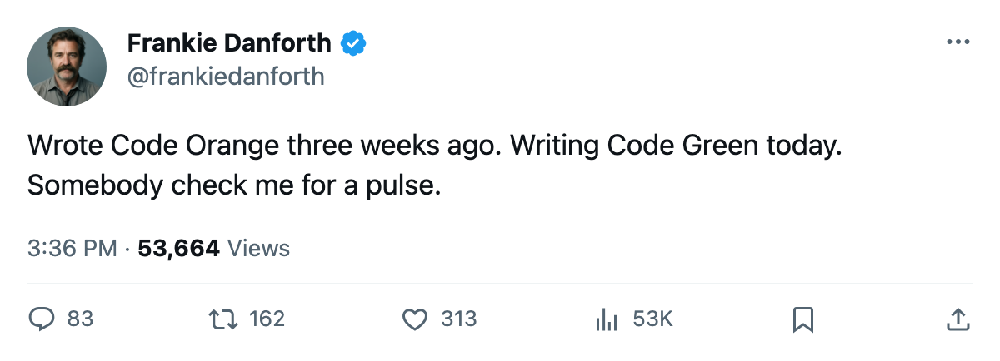
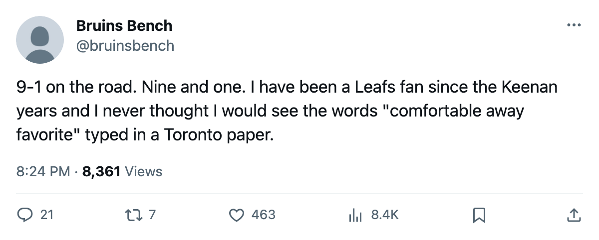

DANFORTH: Code Green, 35 shots, 7 goals, and an away record nobody forecast
I hate typing this code. The road is where this season got built.
 Frankie DanforthColumnist · Queen City Telegram
Frankie DanforthColumnist · Queen City Telegram
Code Green

 Toronto Maple Leafs beat the
Toronto Maple Leafs beat the  New York Rangers 7-5 on Wednesday at the Air Canada Centre. 35 shots for, 33 against. The Maple Leafs are 19-7-0 through 30 games with 46 points.
New York Rangers 7-5 on Wednesday at the Air Canada Centre. 35 shots for, 33 against. The Maple Leafs are 19-7-0 through 30 games with 46 points.  Boston Bruins sits second in the Northeast at 38.
Boston Bruins sits second in the Northeast at 38.
I printed Code Orange on 1 December after 32 shots and 1 goal. I printed Code Yellow twice since. I am printing Code Green now and it costs me something to type the word.
The road record reads 9-1. That line on the standings page is the story of this season, the one nobody forecast in October. The last 3 games: 3-1 over Pittsburgh on Saturday, 5-1 at Philadelphia on Monday, 7-5 over New York on Wednesday. Petr Chlup87 leads the team with 24 points in 30 games at 20.9 minutes a night.  Stanislav Chistov87 has 21.
Stanislav Chistov87 has 21.  Alexander Mogilny89 has 21.
Alexander Mogilny89 has 21.  Maxim Afinogenov86 has 19.
Maxim Afinogenov86 has 19.  Rick Nash85 has 18. Five guys above 18, nobody's carrying this on one line.
Rick Nash85 has 18. Five guys above 18, nobody's carrying this on one line.
 Marian Gaborik99 is still out, leg, return 25 December.
Marian Gaborik99 is still out, leg, return 25 December.  Brad Richards87 comes back on 17 December. The lineup gets wider by the week and nobody has missed a beat.
Brad Richards87 comes back on 17 December. The lineup gets wider by the week and nobody has missed a beat.
The defence allowed 5 on 33 shots to a Rangers club at home.  Rostislav Klesla87 and
Rostislav Klesla87 and  Barret Jackman86 both sit at 87 overall with form terms of +8 on the Bureau's Development Index. They are also the pair that conceded 5. I hold both facts and I do not know which one matters on Thursday.
Barret Jackman86 both sit at 87 overall with form terms of +8 on the Bureau's Development Index. They are also the pair that conceded 5. I hold both facts and I do not know which one matters on Thursday.
The Southeast swing starts Thursday at  Atlanta Thrashers, a 9-15-2 club with 24 points that Toronto beat 6-4 earlier this season.
Atlanta Thrashers, a 9-15-2 club with 24 points that Toronto beat 6-4 earlier this season.  Florida Panthers on Saturday, where
Florida Panthers on Saturday, where  Roberto Luongo95 plays the club that traded him on 25 January.
Roberto Luongo95 plays the club that traded him on 25 January.  Tampa Bay Lightning on Sunday, 13-9-5 with 37 points and 4 straight wins. After that,
Tampa Bay Lightning on Sunday, 13-9-5 with 37 points and 4 straight wins. After that,  St. Louis Blues and Atlanta at home before Christmas.
St. Louis Blues and Atlanta at home before Christmas.
I'm taking a point at Atlanta and a point at Florida. Tampa Bay I will watch before I open my mouth.
The fourth line is still a tax. Tim Gardener75 has 0 points in 21 games at 3.7 minutes a night.  Jason Spezza73 has 5 in 24 at 5.6. Those minutes go to players who cannot drive possession and the top nine carry the load. I said this in October. I will say it in March.
Jason Spezza73 has 5 in 24 at 5.6. Those minutes go to players who cannot drive possession and the top nine carry the load. I said this in October. I will say it in March.
Code Green. I hate typing it.

